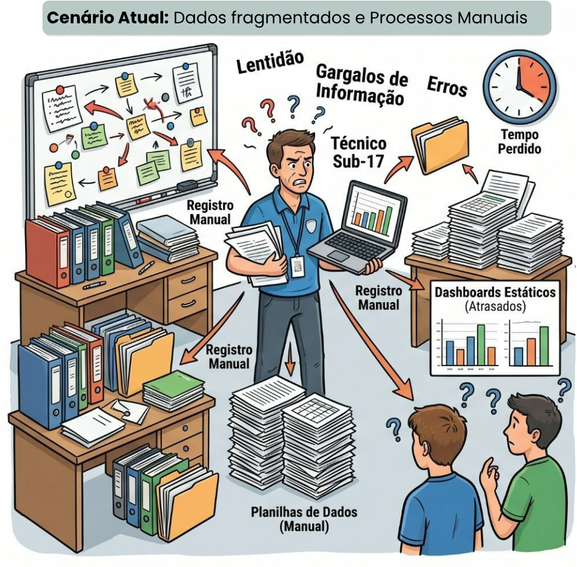
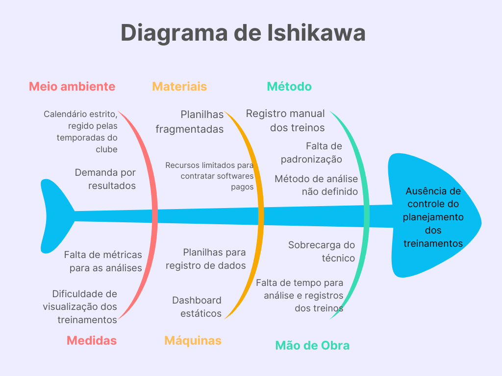
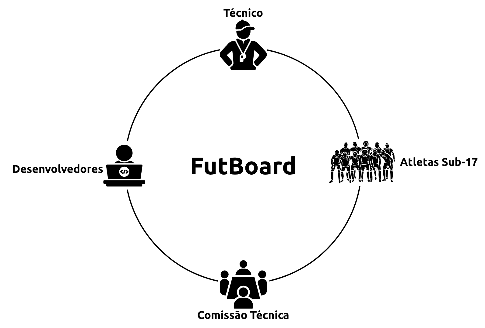

Cenário Atual do Cliente e do Negócio
1.1 Identificação do Cliente/Parceiro
- Nome: Marcus Vinicius Rodrigues
- Tipo: Clube esportivo (categoria de base — futebol) - Canaã Esporte Clube
- Representante: Marcus Vinicius Rodrigues
- Forma de contato: Contato rápido por WhatsApp, reuniões periódicas feitas pelo Teams.
- Vínculo com o projeto: Cliente direto, principal contato, responsável por informar os requisitos do produto, autorizar e validar as entregas.
1.2 Introdução ao Negócio e Contexto
O Canaã Esporte Clube atua na formação de atletas de futebol, com foco na categoria de base Sub-17. O público-alvo direto da aplicação é o técnico responsável por planejar, executar e avaliar e gerenciar os treinamentos ao longo da temporada esportiva composta por cerca de 34 atletas e com treinos diários, com horários e durações variadas.
Atualmente, o técnico representado pelo cliente Marcus Vinicius Rodrigues registra seus treinos em planilhas do Excel de forma manual, densa e pouco intuitiva, coletando dados no campo e digitando-os um a um após as sessões. Após o preenchimento, ele utiliza filtros que relacionam as tabelas para alimentar dashboards estáticos usados na análise de cada treino. Todo esse processo gera uma sobrecarga no cadastramento dos dados devido ao calendário apertado do clube e à demanda por resultados, já que esse volume de inserção diária consome horas do seu tempo extracampo.
1.3 Rich Picture

1.4 Identificação da Oportunidade ou Problema
O projeto surge da necessidade de solucionar a dificuldade do controle dos planejamentos dos treinamentos da equipe. Esse problema é potencializado por um ambiente esportivo desafiador, marcado por um calendário estrito e por uma constante demanda por resultados. Atualmente o acompanhamento da equipe é realizado por meio de planilhas fragmentadas e dashboards estáticos. Esse registro manual dos treinos junto à falta de padronização e a ausência de um método de análise bem definido causam sobrecarga do técnico, que esbarra na falta de tempo para análise e registro dos treinos. Com falta de métricas para as análises e a dificuldade de visualização global dos treinamentos dificultam a avaliação da efetividade e da distribuição das cargas de treino ao longo da temporada, prejudicando decisões técnicas que deveriam ser fundamentadas em dados. O nosso projeto atua como uma ferramenta estruturada para mitigar essas dores operacionais do cliente.

1.5 Desafios do Projeto
- Estruturar os conceitos de periodização esportiva (macrociclos, mesociclos, microciclos).
- Processar automaticamente os dados registrados em relatórios estatísticos e gráficos interativos
- Garantir usabilidade para um usuário não necessariamente técnico em tecnologia (o treinador)
- Desafio técnicos acerca das tecnologias que o time de desenvolvimento utilizará para criar as análises e gráficos.
- Migrar, importar os dados já existentes das planilhas de Excel atuais do treinador para o novo sistema, assegurando que os dados não sejam perdidos durante a transição.
1.6 Mapa de Stakeholders
1. Marcus Vinicius Rodrigues(Técnico do sub-17 e Cliente Direto): É o representante do Canaã Esporte Clube, atuando como técnico da equipe Sub-17 e principal contato do projeto.
Relação: É o público-alvo direto e usuário principal, será quem vai utilizar da aplicação diariamente para registrar, analisar, planejar, executar e avaliar os treinamentos esportivos.
Interesse e Expectativa: Tem o interesse de solucionar a sobrecarga causada pelo registro manual fragmentado em planilhas e pela lentidão dos dashboards estáticos. Espera obter um sistema com dashboards em tempo real, geração automatizada de relatórios, onde consiga obter o controle do planejamento de seus treinamentos estruturado cientificamente na periodização esportiva (macro, meso e microciclos). Possui uma familiaridade mediana com o uso de soluções digitais.
Nível de Influência: Figura principal, é o grande decisor do projeto. Ele autoriza e valida as entregas.
2. Comissão Técnica do Canaã Esporte Clube: São os profissionais que auxiliam o técnico e compõem o corpo técnico.
Relação: Público secundário da aplicação, usuários diretos. Eles vão apenas visualizar e ler os dados.
Interesse e Expectativa: Têm interesse em realizar análises estatísticas por meio de relatórios e gráficos interativos. Por possuírem menor familiaridade tecnológica que o técnico, sua principal expectativa é que o sistema garanta usabilidade simples para usuários não técnicos.
Nível de Influência: Participam do uso, mas não participam das validações.
3. Jogadores (Atletas do sub-17): Os jovens atletas em formação no clube pertecem a faixa etária de 16-17 anos.
Relação: São a origem das coletas de dados e o foco central das informações armazenadas no sistema (conforme apontado no fluxograma de oportunidades do projeto).
Interesses e Expectativas: Embora não interajam com o sistema, dependem de um bom acompanhamento automatizado para terem seu desempenho e cargas avaliados corretamente ao longo das temporadas, os atletas tem uma rotatividade mediana por ser um clube de base.
Nível de Influência: Baixa influência sobre o desenvolvimento ou decisão de uso da ferramenta. No entanto, são o grupo que será diretamente impactado pelas tomadas de decisões técnicas que o treinador fará com base nas análises geradas pelo produto.

1.7 Segmentação de Clientes
Técnico / Comissão técnica: Independente da faixa etária, este grupo é composto por pessoas que são técnicos de clubes, ou da comissão técnica que se interessam por fazerem análises dos seus treinos por meio de dashboards, gráficos e relatórios.
Técnico: O nível de familiaridade tecnológica é intermediário: embora não possuam formação na área de tecnologia.
Comissão Técnica: Possuem menor familiaridade tecnológica em comparação ao técnico.